Integrações (webhooks)
Envie os dados de um formulário a outros sistemas automaticamente quando uma solicitação é enviada, aprovada, reprovada ou quando o fluxo é concluído.
Ver: integrations.view · criar: integrations.create · editar e testar: integrations.update ·
excluir: integrations.delete · publicar/despublicar: integrations.publish · ver logs: integrations.logs.
Por padrão, só o Administrador as possui, pois envolvem credenciais de outros sistemas.
Como funciona
A lista de integrações
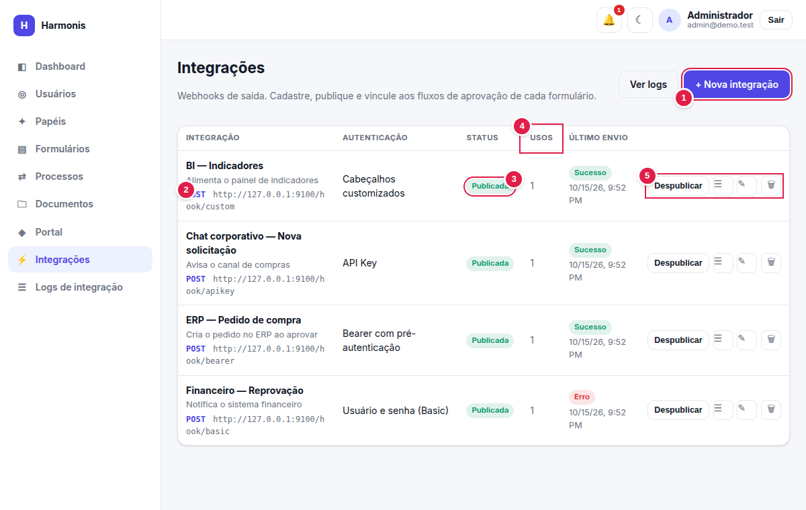
- + Nova integração — abre o cadastro (
integrations.create). - Método e URL — o destino de cada integração (a URL é exibida para quem tem acesso a esta tela).
- Status — Publicada pode ser usada nos fluxos; Rascunho não.
- Usos — em quantos vínculos (formulário × evento) a integração está ligada.
- Ações — Publicar/Despublicar, ☰ ver logs desta integração, ✎ editar, 🗑 excluir.
A coluna Último envio mostra o resultado (Sucesso, Erro ou Ignorado) e quando ocorreu.
Cadastrando uma integração
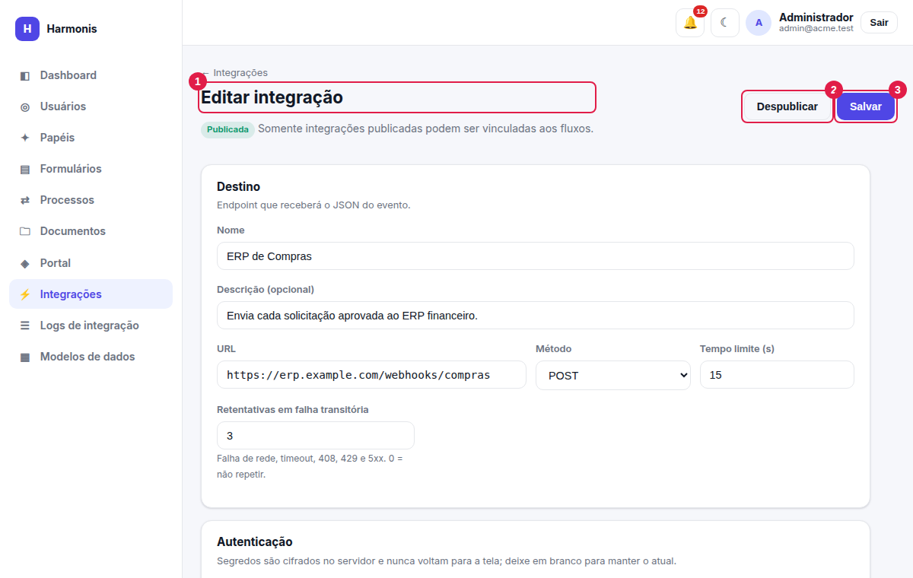
- Título e status — mostra se está Rascunho ou Publicada. Somente integrações publicadas podem ser vinculadas aos fluxos.
- Publicar / Despublicar — alterna o status (
integrations.publish); só existe depois de salvar. - Salvar — grava as alterações; fica desabilitado sem Nome e URL. Ao salvar uma integração nova, você é levado à edição dela (onde ficam “Testar” e “Onde é usada”).
Destino
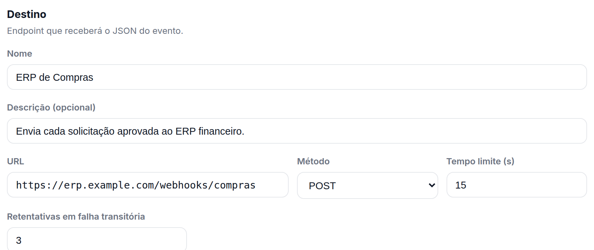
| Campo | Regras |
|---|---|
| Nome | Obrigatório até 150 caracteres e único na empresa (“Já existe uma integração com esse nome.”). É o que aparece ao vincular no fluxo. |
| Descrição | Opcional, até 500 caracteres. |
| URL | Obrigatório deve começar com http:// ou https://. Não aceita usuário/senha na própria URL (use a autenticação), nem fragmento (#). Valem ainda as regras de segurança de rede. |
| Método | POST (padrão), PUT ou PATCH. |
| Tempo limite (s) | De 1 a 60; padrão 15. Se o destino não responder nesse prazo, a tentativa falha por “tempo esgotado”. |
| Retentativas | De 0 a 5; padrão 2. Quantas vezes repetir após falha transitória (veja Entrega). 0 = não repetir. |
Autenticação do destino
Escolha como o Harmonis se identifica no sistema de destino. Há seis opções:
| Tipo | Quando usar |
|---|---|
| Sem autenticação | Destino aberto ou protegido por rede/assinatura. |
| Usuário e senha (Basic) | APIs que exigem Authorization: Basic. |
| API Key | APIs com chave em cabeçalho (ex.: X-Api-Key) ou na query. |
| Bearer token | Token fixo e de longa duração. |
| Bearer com pré-autenticação | APIs que exigem fazer login com usuário e senha para obter um token temporário. |
| Cabeçalhos customizados | Esquemas próprios: tudo é feito pelos cabeçalhos da seção seguinte. |
Senhas, tokens e chaves são cifrados no servidor e nunca voltam para a tela. Ao editar, o campo aparece vazio com “•••••••• (mantida)” e o aviso ✓ definida. Deixe em branco para manter o valor atual; digite um novo para substituí-lo. Ao trocar o tipo de autenticação, os segredos do tipo anterior não são aproveitados.
Sem autenticação
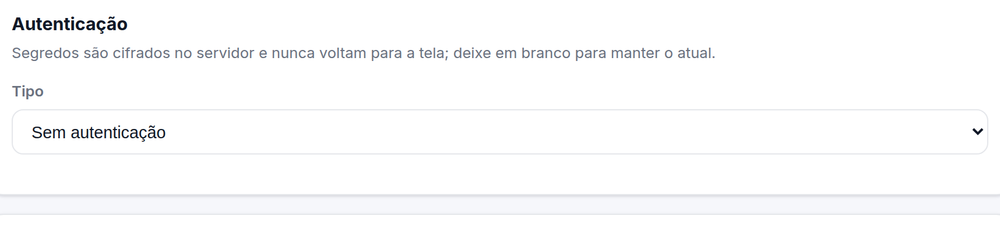
Usuário e senha (Basic)
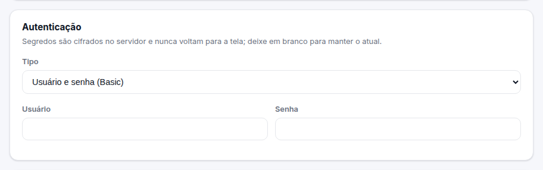
| Campo | Descrição |
|---|---|
| Usuário | Obrigatório |
| Senha | Obrigatória na criação; vazia na edição = mantém a atual. |
Envia Authorization: Basic base64(usuário:senha).
API Key
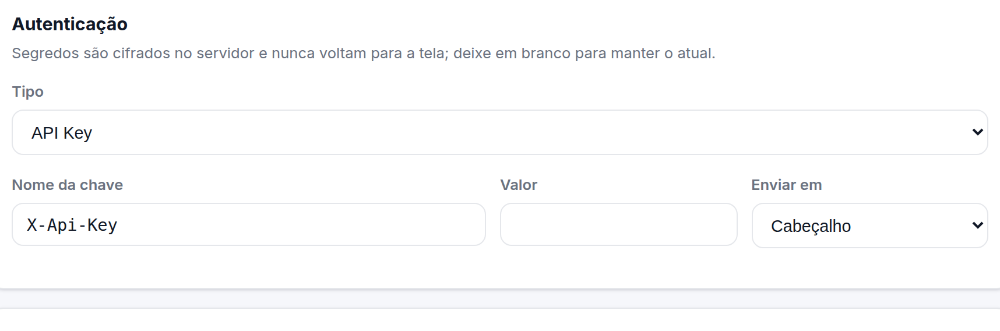
| Campo | Descrição |
|---|---|
| Nome da chave | Nome do cabeçalho (ex.: X-Api-Key) ou do parâmetro da query (ex.: api_key). Em cabeçalho, deve ser um nome válido e não reservado. |
| Valor | A chave (segredo). |
| Enviar em | Cabeçalho ou Query string (acrescentada à URL; nos logs, o valor aparece mascarado como ***). |
Bearer token
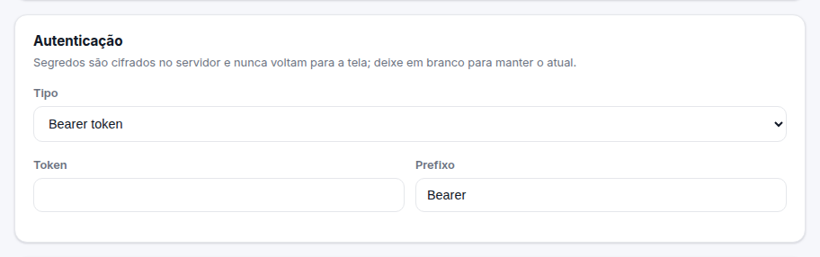
| Campo | Descrição |
|---|---|
| Token | O token (segredo). |
| Prefixo | Palavra antes do token no cabeçalho Authorization. Padrão Bearer; use outro se a API pedir (ex.: Token). |
Bearer com pré-autenticação
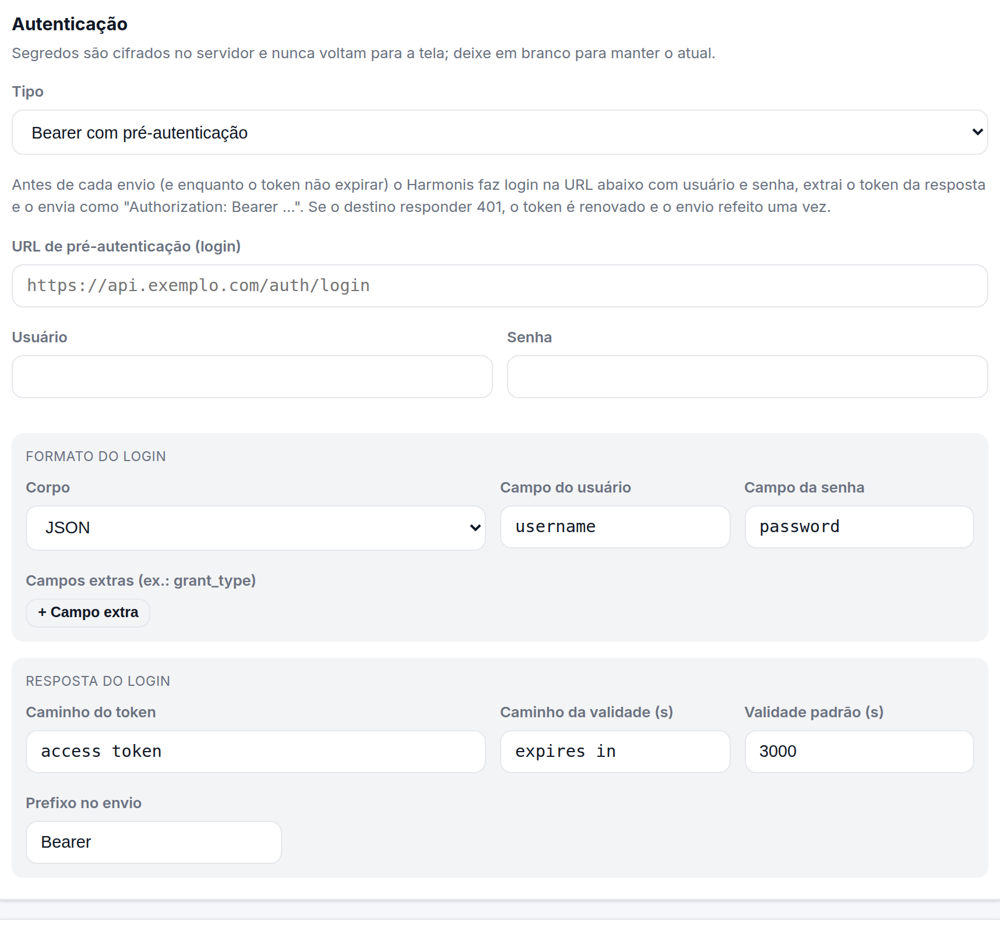
Antes de enviar o evento, o Harmonis faz uma chamada de login à URL informada, extrai o token da resposta e o usa como Bearer. O token fica em cache até expirar, então o login não é refeito a cada envio. Se o destino responder 401, o token é descartado, um novo é obtido e o envio é refeito uma vez.
| Campo | Descrição |
|---|---|
| URL de pré-autenticação (login) | Obrigatório endpoint que devolve o token (método POST). Segue as mesmas regras de segurança de rede da URL principal. |
| Usuário / Senha | Obrigatórios credenciais do login (a senha é um segredo). |
| Corpo | JSON ou Formulário (urlencoded): o formato em que usuário e senha são enviados ao login. |
| Campo do usuário / da senha | Nomes dos campos no corpo. Padrões: username e password (ajuste se a API usa login, user, email…). |
| Campos extras | Pares nome/valor adicionais no corpo do login (até 10), por exemplo grant_type = password ou client_id. |
| Caminho do token | Onde está o token na resposta JSON. Padrão access_token; use ponto para aninhar (data.token). |
| Caminho da validade (s) | Onde está o tempo de vida do token em segundos. Padrão expires_in. |
| Validade padrão (s) | De 30 a 86400; padrão 3000. Usada quando a resposta não informa a validade. |
| Prefixo no envio | Padrão Bearer. |
O Harmonis considera o token vencido 30 segundos antes do prazo informado, evitando usar um token prestes a expirar.
Exemplo de login que o Harmonis faria com os campos acima (corpo JSON):
POST https://api.exemplo.com/auth/login
Content-Type: application/json
{ "user": "svc-harmonis", "pass": "••••••", "grant_type": "password" }
→ 200 { "data": { "token": "abc123", "expires": 3600 } } (caminho do token: data.token)Cabeçalhos customizados
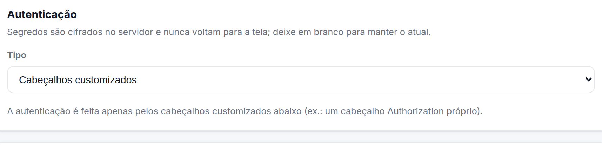
Cabeçalhos customizados
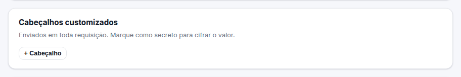
| Campo | Descrição |
|---|---|
| Nome | Nome do cabeçalho (ex.: X-Tenant). Até 20 cabeçalhos; não pode repetir. |
| Valor | Texto (sem quebras de linha, até 2000 caracteres). |
| secreto | Marque para cifrar o valor e nunca exibi-lo (ex.: um segredo próprio). Ao editar, deixe o valor em branco para mantê-lo. |
São recusados: Host, Content-Length, Content-Type, Transfer-Encoding, Connection, Upgrade, Expect, TE, Trailer,
Keep-Alive, Proxy-Authorization e qualquer X-Harmonis-*. O cabeçalho Authorization só pode ser definido aqui quando a autenticação é
Sem autenticação ou Cabeçalhos customizados (nos demais tipos ele já é gerenciado pelo sistema).
O tipo Cabeçalhos customizados exige ao menos um cabeçalho.
Assinatura da requisição (HMAC)
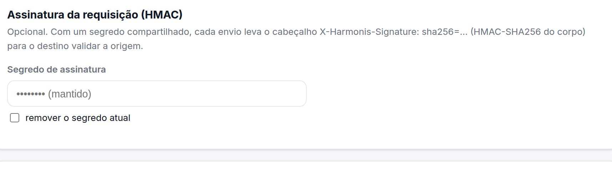
Opcional e independente do tipo de autenticação. Com um segredo compartilhado informado, cada envio inclui o cabeçalho
X-Harmonis-Signature: sha256=<HMAC-SHA256 do corpo, em hexadecimal>para que o destino confirme que a mensagem veio do Harmonis e não foi alterada. Para remover o segredo, marque remover o segredo atual e salve.
Como validar a assinatura no destino (exemplos)
# Python
import hmac, hashlib
esperado = "sha256=" + hmac.new(SEGREDO.encode(), corpo_bruto, hashlib.sha256).hexdigest()
ok = hmac.compare_digest(esperado, request.headers["X-Harmonis-Signature"])
// Node.js
const crypto = require('crypto');
const esperado = 'sha256=' + crypto.createHmac('sha256', SEGREDO).update(corpoBruto).digest('hex');
const ok = crypto.timingSafeEqual(Buffer.from(esperado), Buffer.from(req.headers['x-harmonis-signature']));Calcule o HMAC sobre os bytes brutos do corpo recebido, antes de qualquer reformatação do JSON.
Testar a integração
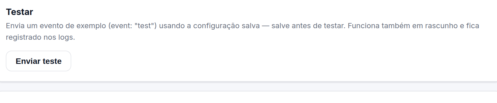
- Salve a integração (o teste usa a configuração salva).
- Clique em Enviar teste. Um evento de exemplo (
event: "test", com dados fictícios) é enviado imediatamente, mesmo em rascunho. - Veja o resultado: Sucesso/Erro, código HTTP, duração, mensagem de erro e o início da resposta do destino.
Todo teste fica registrado nos logs, marcado como manual. Testes não têm retentativas automáticas.
Publicar, despublicar e excluir
| Ação | Efeito |
|---|---|
| Publicar | Libera a integração para ser vinculada aos fluxos. A URL é revalidada nesse momento. |
| Despublicar | Volta para rascunho. Vínculos existentes permanecem, mas os envios passam a ser ignorados (registrados como Ignorado) até nova publicação. |
| Editar | Vale imediatamente, mesmo para integração publicada. Alterar credenciais descarta tokens em cache. |
| Excluir | Só é possível sem vínculos. Caso contrário: “A integração está vinculada a formulários. Remova os vínculos no fluxo de cada formulário antes de excluir.” Os logs permanecem. |
Onde é usada
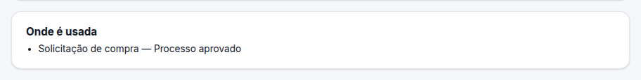
Vinculando ao fluxo de um formulário
A integração só “faz alguma coisa” depois de vinculada. No editor de fluxo do formulário, escolha em cada coluna
(Ao enviar, Ao aprovar, Ao reprovar, Ao concluir) as integrações publicadas desejadas e clique em Salvar. Quem edita formulários (forms.update) pode vincular sem ter acesso ao cadastro.
Como a entrega funciona
- Depois do commit. O envio só ocorre depois que a ação de origem foi concluída com sucesso; uma operação que falha nunca dispara webhook.
- Em segundo plano. A aprovação não espera nem falha por causa do destino (lento ou fora do ar).
- Retentativas. Em falhas transitórias — erro de rede, tempo esgotado, HTTP 408, 429 e 5xx — o envio é repetido até o limite configurado, com espera crescente (padrão: 5 s, 30 s, 2 min, 5 min e 10 min). Respostas 4xx (exceto 408/429), redirecionamentos e erros de configuração não são repetidos.
- Identificador da entrega. Todas as tentativas de uma mesma entrega levam o mesmo
X-Harmonis-Delivery; use-o para evitar duplicidade no destino. - Sucesso = resposta HTTP 2xx.
- Ordem. Eventos próximos (ex.: enviado e aprovado) podem chegar fora de ordem a integrações diferentes; use
occurredAtdo corpo.
O que é enviado
Requisição POST/PUT/PATCH com Content-Type: application/json; charset=utf-8 e estes cabeçalhos:
| Cabeçalho | Conteúdo |
|---|---|
| X-Harmonis-Event | submitted · approved · rejected · completed · test |
| X-Harmonis-Delivery | Identificador único da entrega (igual nas retentativas). |
| X-Harmonis-Signature | Somente se houver segredo de assinatura. |
| User-Agent | Harmonis-Webhook/1.0 |
Exemplo de corpo (evento aprovado):
{
"event": "approved",
"occurredAt": "2026-10-16T00:20:40Z",
"tenant": "demo",
"form": { "id": 1, "name": "Solicitação de compra", "slug": "solicitacao-de-compra" },
"submission": {
"id": 21,
"submittedAt": "2026-10-16T00:20:37Z",
"submittedBy": { "id": 2, "name": "João Lima", "email": "joao@demo.test" },
"data": { "campo_a1b2c3": "Notebooks para o time comercial", "campo_d4e5f6": 18500 },
"answers": [
{ "key": "campo_a1b2c3", "label": "Assunto", "type": "text", "value": "Notebooks para o time comercial" },
{ "key": "campo_d4e5f6", "label": "Valor estimado (R$)", "type": "number", "value": 18500 }
]
},
"process": {
"id": 7, "status": "approved",
"steps": [
{ "step": "Aprovação do gestor", "stepIndex": 0, "approver": "papel: manager", "status": "approved",
"decidedBy": { "id": 3, "name": "Marina Souza", "email": "marina@demo.test" },
"comment": "Aprovado.", "decidedAt": "2026-10-16T00:20:39Z" }
]
}
}| Campo | Descrição |
|---|---|
| event, occurredAt, tenant | Evento, instante em que ocorreu (UTC) e identificador da empresa. |
| form | Id, nome e slug do formulário. |
| submission.data | Respostas por identificador do campo (fácil de acessar por chave). |
| submission.answers | Mesmas respostas em lista, com rótulo e tipo (fácil de apresentar/mapear). Blocos de layout não entram. |
| Anexos | Aparecem como referência (id, name, size, mime); os arquivos não são enviados. |
| process | Id, status e histórico das etapas (aprovador, decisor, comentário, data). Ausente se o formulário não tem fluxo. |
Segurança
- Segredos cifrados em repouso (AES-256-GCM) e jamais devolvidos pela interface ou pela API.
- Proteção contra SSRF. Só
http/https; sem credenciais na URL; redirecionamentos não são seguidos; o destino é verificado após a resolução de DNS. Endereços link-local (como169.254.169.254, o endpoint de metadados de nuvem) são sempre bloqueados. Destinos em rede privada ou loopback (10.x,172.16–31.x,192.168.x,localhost…) são bloqueados por padrão: se você precisa integrar com sistemas da rede interna, a TI deve habilitar a opçãoHARMONIS_WEBHOOK_ALLOW_PRIVATE=true(veja Implantação). - Cabeçalhos validados (nomes padrão, sem quebras de linha) e reservados recusados.
- Logs sem segredos. URLs são registradas com valores sensíveis mascarados e cabeçalhos de autenticação/tokens não são gravados. O conteúdo enviado é gravado: restrinja
integrations.logs. - Permissões separadas para cadastro, publicação e logs.
- “Pré-autenticação: …” — a URL de login foi recusada pelas regras acima.
- “Informe a senha / o token / o valor da chave.” — falta um segredo obrigatório (na criação ou ao mudar o tipo de autenticação).
- “O cabeçalho ‘X’ é reservado e não pode ser definido.”, “Cabeçalho repetido: X”, “Nome de cabeçalho inválido: X”.
- “O tempo limite deve estar entre 1 e 60 segundos.” / “As retentativas devem estar entre 0 e 5.”
Receita: integrar com um ERP
- Peça ao time do ERP: URL do endpoint, forma de autenticação (login com usuário e senha? chave?) e o formato esperado.
- Integrações → + Nova integração. Preencha o destino e escolha a autenticação (ex.: Bearer com pré-autenticação).
- Salvar → Enviar teste. Se vier Sucesso, está tudo certo; se vier erro, leia a mensagem e consulte os diagnósticos.
- Publicar.
- Abra o fluxo do formulário (⇄), adicione a integração em Ao aprovar e Salvar.
- Aprove uma solicitação de teste e confira o resultado em Logs de integração.